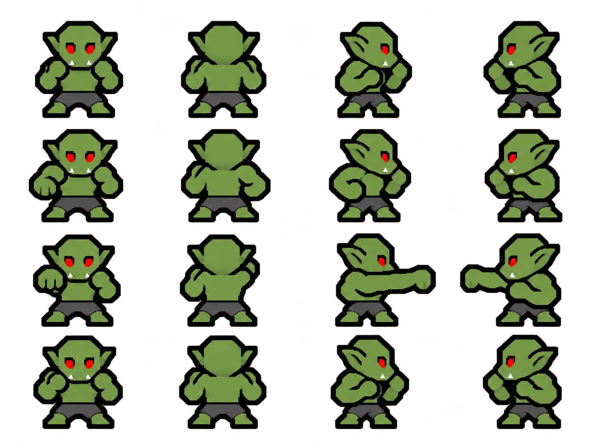
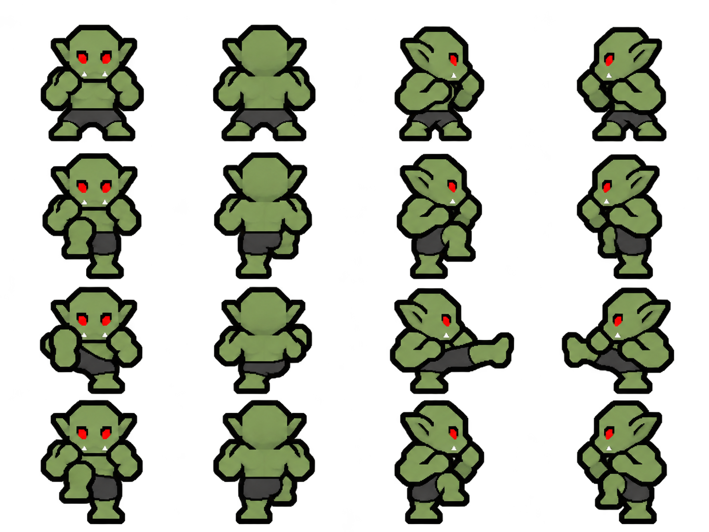
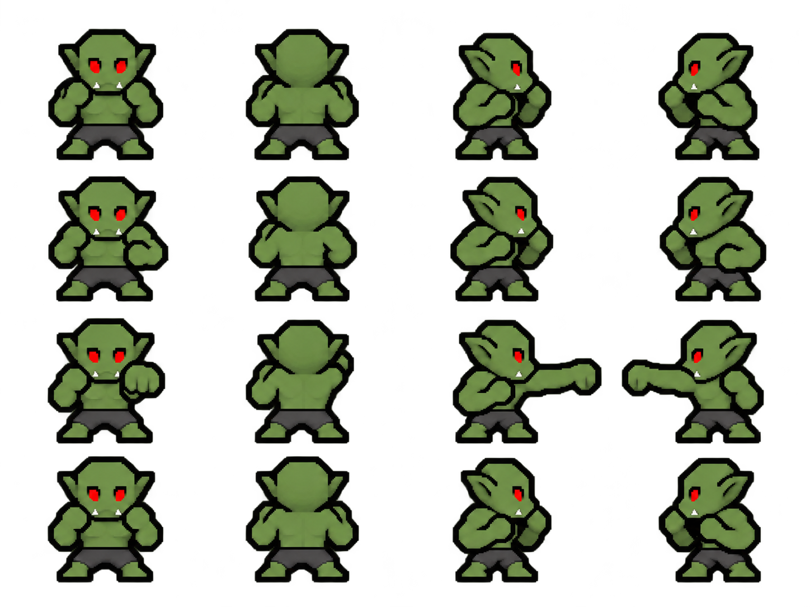
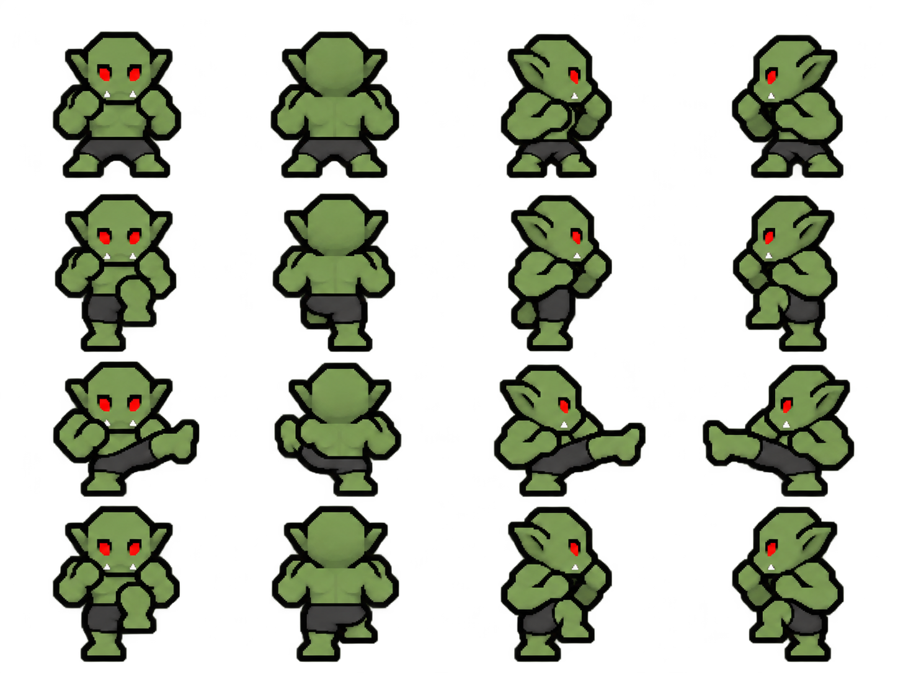

Orc attack drawings
Four separate attacks. Columns: South, North, East, West. Rows: guard, windup or knee chamber, impact, recovery. Drawing drafts; native-pixel cleanup and pose corrections remain.
Right punchSouthNorthEastWest

Right kickSouthNorthEastWest

Left punch — back-facing impact needs shoulder correction
Left kick — front impact needs the approved forward-facing sole